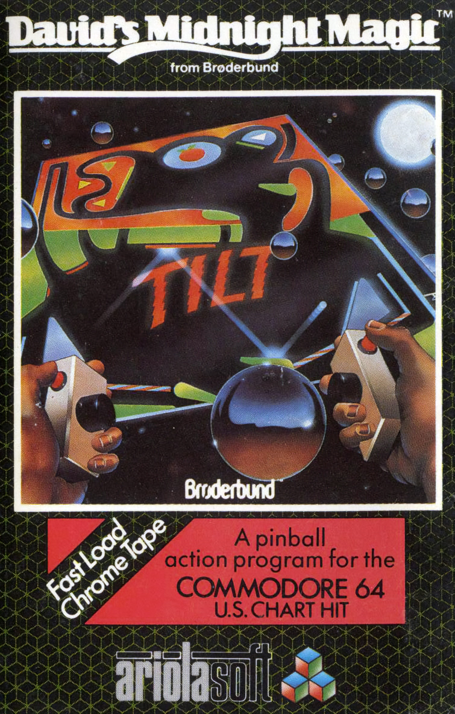

David Midnight's Magic
David Midnight's Magic is a fantasy-themed pinball video game developed by David Snider and released in 1982. Players control flippers to keep the ball in play, aiming to score points by hitting targets and completing objectives. With its captivating gameplay and vibrant visuals, David Midnight's Magic remains a beloved classic among pinball enthusiasts.